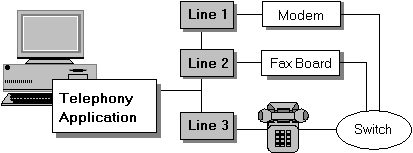

The line concept has evolved over time and been partly superseded by the Address and Terminal concepts. TAPI 3 does not directly use the concept of line, but TAPI 2 continues to incorporate this paradigm.
A line device is a physical device such as a fax board, a modem, or an ISDN card that is connected to a network. The device may not be physically connected to the computer on which the TAPI application is running, such as a modem pool on a server. Line devices support communications capabilities by allowing applications to send information to or receive information from a network. A line device contains a set of one or more homogeneous channels that can be used to establish calls.
Within TAPI 2.x applications, a line device is the logical representation of a physical telephone device. Although "line" often connotes something with two endpoints, it is possible to abstract a line device to a single point because TAPI views it only as a point of entry to the line that leads to the switch.

Although the three lines in the preceding illustration are composed of different hardware and used for different functions, they are abstracted to the same device type and governed by the same rules. The telephone represents not a phone device but a line device used for voice calls. When using this line device for incoming or outgoing calls, the application would also need to open and control an instance of the phone-device class, which is described in detail in later sections.
The line device class is a device-independent representation of a physical line device, such as a modem. It can contain one or more identical communications channels (used for signaling and/or information) between the application and the switch or network. Because channels belonging to a single line have identical capabilities, they are interchangeable. In many cases (as with POTS), a service provider will model a line as having only one channel. Other technologies, like ISDN, offer more channels, and the service provider should treat them accordingly.
TAPI 2.x: Applications discover line capabilities using the lineGetDevCaps function. Version negotiation using the lineNegotiateAPIVersion lineNegotiateExtVersion functions must have been previously called.
TAPI 3.x: Applications rely primarily on the address concept.
Â
Â